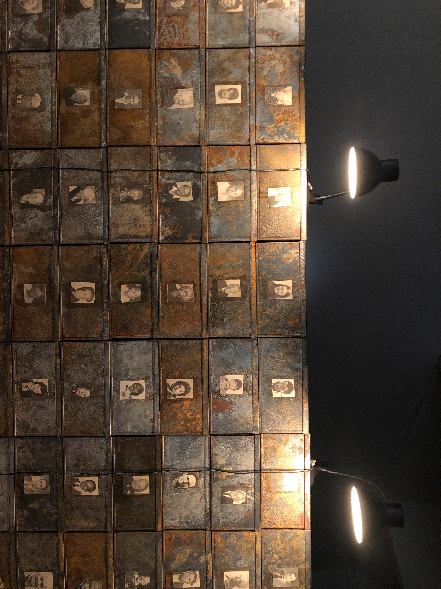
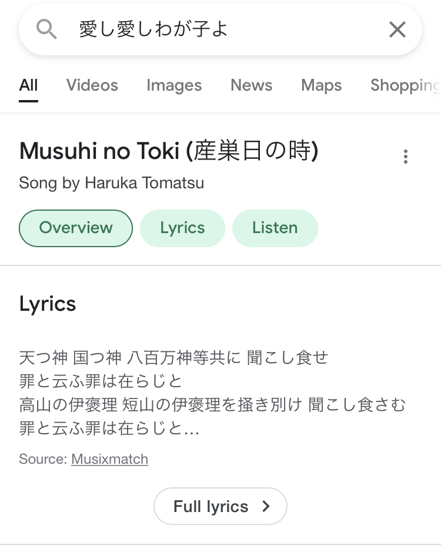
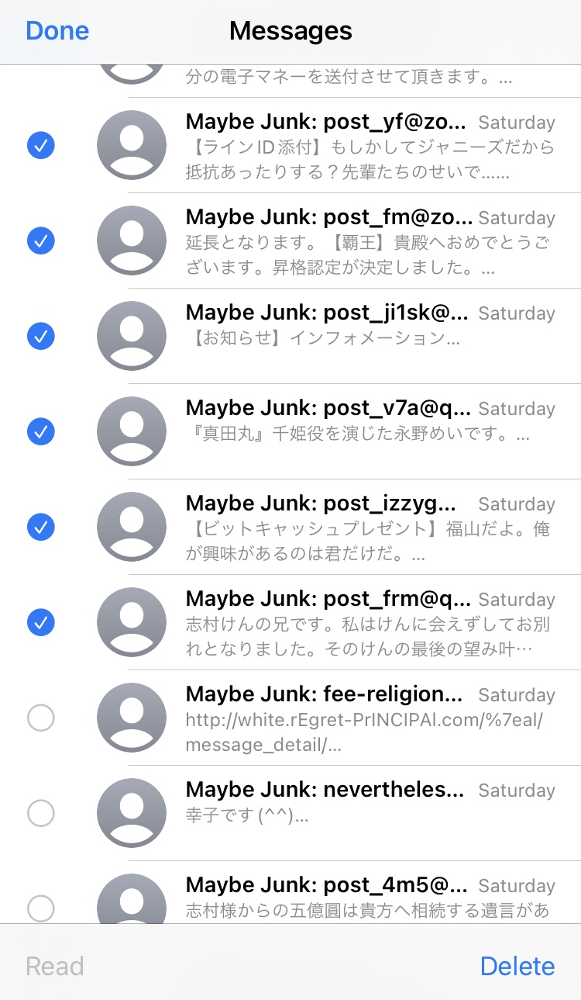
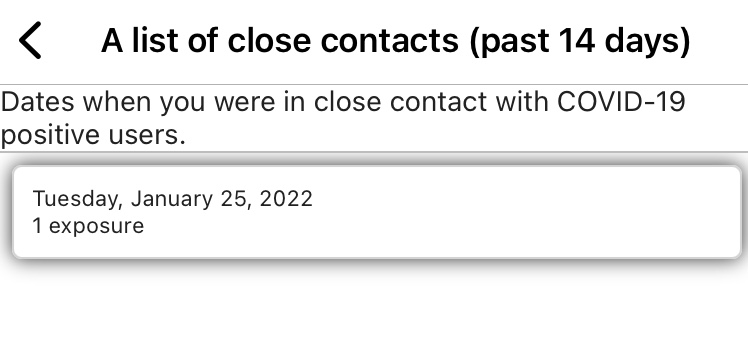

R401
1/2
今日ヘッドホンしていて柿の種食べていてヘッドホン外れて戻そうとしたら柿の種を耳に差してた。
1/3
言祝し読了。かなしかった。
みんな親離れしていてえらいなと思うけれどまた異なる選択をした自分もえらいと思いたい。
自分はめぐまれている、と思う。
物語を描きたいのだが昔みたいにすらすら言葉が出てくるようでなければやる気も続かないし無理だどうしよう何かいい手がないか。
昔は人の文章を真似てそれで満足だったからよかった
プロでもないのにプロみたいなことを言って満足しているのは変わらない
1/4
弟と映画
マトリックスみた
だめだった
リメイクものは大抵だめだ
1/5
現代美術館行った
クリスチャン・マークレー
擬音が日本語だったらもう少し直接的な感触があるのかもしれない。
常設展がいい

ボルタンスキー
わたしはわたし
1/6
それぞれ異なる悪夢を見て不連続な眠りだった
中学校で机の上に勝手にいろいろ置かれていて水筒の蓋が緩んでいたせいでじゃばじゃばこぼれてそれを糾弾したけれど教室は静まり返っていた
仕方ないので外に出て体操着に着替えてついでに夜空の元散歩していたらこどもが数人ブランコを漕いでいて僕はそれを正面から座って眺めていた
戻る途中でゾンビたちがいて襲われないように高速で走っていたけれど追いかけてくる小さな犬は正常で足で蹴飛ばしながら必死に逃げていた
あと3時くらいに左脇の周期的な痛みで目が覚めてしばらく眠れなかった
まだ死にたくないと思った
一度眠ったらその痛みは引いていたのでよかった
まだ死にたくない
年明けに従妹にライン教えたら毎日連絡来て大変だけど放置してたらヤンデレ化しそうで何とかしないといけないかもしれない
ヤンデレ注意報
適正があれば人によりヤンデレ化は別に何も無くても起こりそう
ヤンデレ適正
生きるのが大変なのは短い人生の中でもう十分わかってきたけれどいざ死を意識すると死にたくないと思うのは不思議だ
生きたいというより、このまま死ぬのはかなしすぎるので悔しいなという感じか
かなしいな
生きることは闘いだ
自分の部屋燃やしたいくらい寒い
実際に起こさなければ何を騙ってもよいような雰囲気はよくないか
焼け死ぬってどんな感じなんだろう
多くの人が死んだあと焼かれるけれど、その段階ではもう焼かれる感触を得られないだろうから残念だ
焼け死ぬのと凍え死ぬのどちらが楽なんだろう
死ぬ直前の苦しみは焼け死ぬ方が強いけれど、死ぬまでの悲壮感は凍え死ぬ場合の方が大きそう
どちらにせよつらいか
将来のこととか考えて理想郷とかないことにここ数年で気づいて、ほんとうの意味で絶望となかよくなってきたような感じがする
まだ希望を抱いている分もあるので絶望しきっているとは言いがたいか
希望と絶望は必ずペアで存在するような
若いころからこんな斜に構えているとほんとにかなしい一生を過ごすことになる気もするので気をつけたい
この狭いコミュニティを抜けていろいろしたい
その先にまた狭いコミュニティがある
1/7
東西に走る道は路面の凍結が残っている一方、南北に走る道は残っていないことを発見した。
陽当たりの問題？
家族に言ったらそんなの当たり前だというような反応をされた
むかつく
明日急に餌やりが入ってだるしな
餌やりがというより、電車に乗ってはるばるいくのがだるしな
おーおー
おーぴーきゅーあるえすてぃーゆーゔいかーっと
1/11
Do you belive in God？という投げかけが存在する以上、神は曖昧な、不確定な、もやもやした存在であることは間違いない。
1/12
怒りをコントロールする方法
電車に乗ることで生じるあらゆる不本意な邂逅が一日のはじまりとおわりにある以上毎日が最悪になる
人は多すぎる
日記に書けば多少気が楽になるのでこういうマインドセットをもって生まれてまだましだった。
マインドセットって言葉いいな
着脱可能なカートリッジ感がある
がちゃこんという音を立ててマインドセットを頭に入れる
がちゃこんがちゃこん
暴力的な気分になるときcyberpunk 2077で永遠に民間人を殺してまわってたことあるけれどあまり気は晴れなかった
現実でそれをやるとすぐ捕まっちゃうしそれをやるにはまだ人生もったいないかも
人をバーチャルで殺してもリアルで殺してもどちらにせよ気は晴れないだろう
なので暴力的な心理を暴力的な方法で発散するよりは別の何かに変換して霧散させる方がいい気がする
仕方なく代替的にやるというのではなく、ベストな選択としてそれが存在するのだと信じたい
僕は頭がおかしいのかもしれない
ひぐらしを読んで泣く習慣
1/14
どこに行っても人、人、人.
本家の柿の種より10円安い柿の種もどきを買ったら味うすいなこれ
やはり本家の味は伊達じゃあない
ハイネケン好き
アカガネサルハムシ
1/16
美大行った
若者が大量にいた
大量の作品を前に次々なだれ過ぎる人々の様子を眺めていると美大での製作もsnsへの投稿も大して差の無い営みのような気がすると製作者側からは感じるのではと思った
しんりゃくしんりゃくしんりゃくしんりゃくしんりゃくしんりゃくイカむすめ！


1/20
民間飛行早く開発進んで死ぬまでに一度は月くらいまでは行きたいな
一番大変でつらいのは条件検討かもしれない
人生もある意味終始条件検討しているようなものか
ceroのsummer soulでさまそーさまそーって何を冷ますんだと思っていたのだがsummer soulのことだったし思いっきり曲のタイトルじゃんかこれじゃん
さまそぉ〜、さまそぉ〜おお、いぇええっえ、え、え、えぇっえっえ、いぇええっえ、え、え、えぇっえっえ、
でもcool downとも言っていた
なつのたましい
稀有な才能
1/21
都市部に好んで寄り集まりみちみちぬらぬらひしめきあうことにこの上ない極上の快楽を感じる病的で異常でマゾヒスティックな生命の理に反する日本人の性癖は古来より遍く伝えられている。
1/22
澪尽くし裏読了..
クイズ真・オヤシロショックけっこうむずい
1/23
We happy few
昨日父の話で祖父がインテリアデザイナーだったことを初めて知った
祖父の七光りを浴びたい
小学生の頃夏休みに祖父の家に行って幾日か過ごしたときに祖父が絵日記を手伝ってくれたのだが僕の描いたクワガタの背景を祖父が全部埋めてしまい祖父はそこに緑生い茂る生き生きとした描写を創造してしまったので単にクワガタが虫籠に入っている様子を描きたかった僕はその出来が気に入らず不満げだったのを淡く覚えている。
祖父が生きていたころの記憶は、それ以外では、無言で床に臥せてじっとしている祖父の姿しか記憶にない。
あとは祖父が亡くなったあとのことで幾つか、よく覚えていることがある。
祖父が亡くなって直後すみずみまできれいに焼かれて骨になった祖父の喉仏を祖母と一緒に箸でつかんでつぼか何かに入れたのをよく覚えている。
その後しばらくして祖父の海葬に立ち会ったときのことも印象深い。
祖父の遺骨、もうただの粉になっているそれを風にのせて海に撒いた。
そのときどう思っていたかは忘れてしまったけれど今になってみればそうして粉々にされて広い広い海原に撒かれるのは、さぞかし気持ちのいいことだったろうなと思う。
と数年前のメモに書いてあった
なので死んだら墓なんて作らずに骨を海に撒くなり山に埋めるなりして一切人工物の中に閉じこめないでほしいと誰かに頼むことにいまのところ決めている。
でも形式上の墓ならいいか
わたしはーそこにはーいませんー
終末旅行に出てきた墓みたいに、本人の肉体ではなくて、思い出の品を入れてもらう引き出し形式の墓はよかったな
cyberpunk 2077でも同様の形式の墓があって少し驚いた
林立する墓
墓、墓、墓
祖父は父方も母方も早くに亡くなったので、彼らが生きているときの思い出は多くない。
NEW GAME! 最終巻読んだ
キャラはキラキラかわいいのにその群像がけっこう重い話が多く読んでてつらい部分もあった
リアルな重さがあった
特に人間関係とか、の重み
みんな挫折とかつらい思いしてるのに最後には立ち直ってきらきら前に進んでいくのが眩しすぎてつらいというか
でもよかったな
自分もこんな風に仲間たちと絆を深めながら何かを成し遂げていくことができるなら悪くないなと思えた
強みがそういうところにあるのなら
たぶん現実はもっと昏い
たぶんたぶんたぶん
結局どのコミュニティに属するのが自分にとって一番幸せに生きれそうかということだと思う
いろいろ試して決めたいけれど同時に一度しか試せないしやり直しも効かない
人生ハードモードってつまりこういうことなのか
その点ゲームではいろいろ試せるしやり直しも効くしいいと思う
ゲームのよさってそこだと思う
リアルがやり直しの効かない残酷な世界ならバーチャルの方を強化してしまえばいいのではなイカ？と思った。
そうすればリアルのことで常に迷い恐れることがなくなるので最高じゃなイカ？と思った
不健全な病的な考えではないはず
1/26
You, take a JOY, immediately!
You, take a JOY, immediately!
You, take a JOY, immediately!
Happines is the country with no past.
1/27
タスクとか毎日時間無くなってもやり切ろうとするから遅くなって悪循環が続く
1/28
バイリンガルニュース聞くとなんか落ち着く
1/29
藝大行った
でかい自転車漕いでる人とか、武士道で愛を熱唱している人がいた
インスタのQRコード多すぎ
便利だけど哀しい
身売り人生
人間関係で回っている世界
人多すぎる、as always.
西友だけは人が少なくて助かる、唯一の逃げ場。
純粋に芸術作品とか享受できなくなってもうだめだと思う
紅茶うまい
インスタってそんないいsnsかなと思う
写真撮るのだるいし他の人が撮ってると空間が邪魔だし撮っても見返さないし記憶には残らないしいいことがない。
自分はあまり写真でよろこべない人間なのかもと思う
というかsnsに結びついた行為があまり好きではないだけか
デジカメいじるの楽しいし、たまに自分のためだけに生きものとか世界の写真撮ることもあるし
作品のキャプション読むのだるいし読んでもなんだこれってなるのが多いから要るのかなと思う。
キャプションシステムなんとかならないのかなと思う。
よく考えたらなんでこの不恰好な仕組みずっと残ってるのか
無駄無駄無駄
そういう点で漫画はキャプションの要素と作品本体の要素が融合してかついい感じに調和しているからいいなと思う
反抗的な作品好きなときが多い
インスタで写真載せるのやめて文章だけにするか
僕は世の中に常に不満をもってる哀れな人間なんだなと気づいた
益々斜に構えた嫌な人間になっていく
芸術はそれを享受したり消費したりする人あり気で存続している傾向にあるから、どうしても大学の庇護下から放りだされた後は醜く身売りをして生きて行かなくてはいけなくなるのか
金払ってるから庇護じゃない
サブスクリプション
お金払うので好き勝手やらせてくださいどうかお願いしますお金は払いますなにとぞなにとぞ
その点科学研究は大衆からの直接的な影響を受けずにゼーレの席に座っているような人々のご機嫌取りだけしていればある程度自由がきくからまだ恵まれているのかもしれない
芸術家の方が科学者より数が少ないのだろうか
芸術家の方が世の中から迫害を受けているのだろうか

1/30
cocoaちゃんと通知くるのか
紅茶うまいなしかし
Happines is a warm gun.
1/31
斜向かいの家が連日めためちゃに破壊されている
家もかなり揺れて崩壊しないか心配
実際はかなり綿密に小綺麗にお上品に破壊しているのだろうけれど。
日記の機能が専ら心の整理と浄化に収束していくからぬたぬたしたものになってしまうのはしょうがないし徒に人に晒すものでもないのか
きもちわるい言葉ばかりだ、幻滅だ
なんかァ、つ、く、り、だ、そぅーぜ